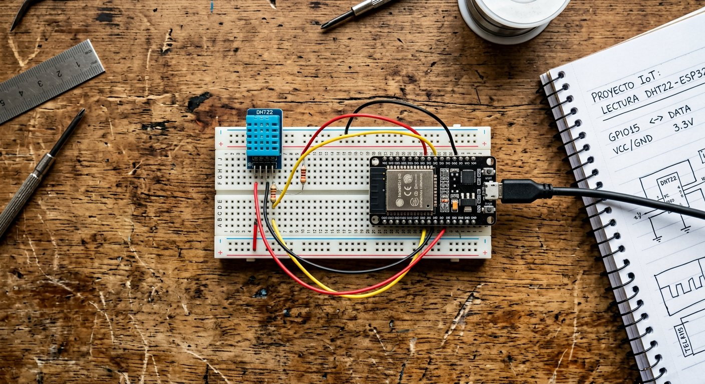

Qué cubre esta guía
- Qué es Blynk y cómo se compara con MQTT
- Crear cuenta, plantilla y dispositivo
- Pines virtuales: el puente entre el ESP32 y la app
- Construir el panel con medidores y botones
- Instalar la librería de Blynk
- Código: enviar temperatura y humedad
- Consejos para un dashboard útil
- Problemas comunes y soluciones
- Preguntas frecuentes
Qué es Blynk y cómo se compara con MQTT
Blynk es una plataforma de IoT que agrupa en un solo paquete la aplicación móvil, el servidor en la nube y las librerías para microcontroladores. Su gran ventaja: te permite construir un panel visual con medidores, botones y gráficos sin programar una app móvil.
| Aspecto | Blynk | MQTT |
|---|---|---|
| Curva de aprendizaje | Baja (app lista) | Media (armar cada pieza) |
| Flexibilidad | Media (depende de la plataforma) | Alta (protocolo abierto) |
| Panel visual | Incluido | Hay que armarlo aparte |
| Dependencia de proveedor | Sí | No |
| Ideal para | Prototipos y monitoreo rápido | Producción y control total |
La regla práctica: Blynk para ver resultados en una hora; MQTT para un sistema propio y sin dependencias. Muchos proyectos empiezan en Blynk y migran a MQTT cuando crecen, usando la guía de MQTT como base.
Crear cuenta, plantilla y dispositivo
- Crea una cuenta en la plataforma Blynk (web o app móvil).
- Crea una plantilla (template) que define qué tipo de datos manejará tu dispositivo: asigna los pines virtuales que usarás.
- Agrega un dispositivo a partir de la plantilla, seleccionando el hardware ESP32 y el tipo de conexión (WiFi).
- Copia el token de autenticación que genera la plataforma: es la llave que vincula tu código con ese dispositivo.
Pines virtuales: el puente entre el ESP32 y la app
Los pines virtuales (V0, V1, V2…) son canales abstractos de datos que no corresponden a pines físicos del microcontrolador. Son el mecanismo estándar para intercambiar información:
- Del ESP32 a la app: el código envía la temperatura al pin virtual V1 con
Blynk.virtualWrite(V1, valor), y el widget configurado en V1 la muestra. - De la app al ESP32: un botón configurado en V2 activa una función en el código cuando se presiona.
Usar pines virtuales desacopla el hardware del panel: puedes reorganizar la interfaz o cambiar el sensor sin tocar el cableado, solo ajustando qué pin virtual usa cada widget.
Construir el panel con medidores y botones
En el editor de la app, arrastra los widgets al dashboard y asígnales un pin virtual:
- Gauge (medidor): en V1 para la temperatura.
- Gauge o Level: en V2 para la humedad.
- Button (botón): en V3 para encender un LED o activar una salida a distancia.
Cada widget se configura con el pin virtual correspondiente, y automáticamente reflejará lo que el código publique en ese pin. No necesitas escribir código móvil: todo es configuración visual.
Instalar la librería de Blynk
En el IDE de Arduino, abre el Gestor de Librerías, busca "Blynk" e instala la librería oficial. Blynk también requiere la librería WiFi (incluida en el núcleo del ESP32). Una vez instalada, tendrás acceso a los ejemplos incluidos, que son un excelente punto de partida.
Código: enviar temperatura y humedad
Este código conecta el ESP32 a la red, lee un sensor DHT22 y publica los valores en los pines virtuales V1 y V2:
#define BLYNK_TEMPLATE_ID "TU_TEMPLATE_ID"
#define BLYNK_TEMPLATE_NAME "Monitoreo"
#define BLYNK_AUTH_TOKEN "TU_TOKEN_DE_AUTENTICACION"
#include <WiFi.h>
#include <BlynkSimpleEsp32.h>
#include <DHT.h>
const char* SSID = "tu_red_wifi";
const char* PASS = "tu_clave_wifi";
#define PIN_DHT 4
#define TIPO_DHT DHT22
DHT sensor(PIN_DHT, TIPO_DHT);
// Temporizador para enviar datos periodicamente
BlynkTimer timer;
void enviarDatos() {
float humedad = sensor.readHumidity();
float temperatura = sensor.readTemperature();
if (!isnan(humedad) && !isnan(temperatura)) {
Blynk.virtualWrite(V1, temperatura); // envia temperatura al medidor V1
Blynk.virtualWrite(V2, humedad); // envia humedad al medidor V2
}
}
void setup() {
sensor.begin();
Blynk.begin(BLYNK_AUTH_TOKEN, SSID, PASS);
// Llama a enviarDatos cada 2 segundos
timer.setInterval(2000L, enviarDatos);
}
void loop() {
Blynk.run(); // mantiene la conexion y procesa la app
timer.run(); // ejecuta el temporizador
}El patrón es simple y reutilizable: lee el sensor, escribe en el pin virtual, y la app lo muestra. El intervalo de 2 segundos respeta además la frecuencia de muestreo del DHT22 (detallada en la guía del DHT22).
Consejos para un dashboard útil
- Menos es más: muestra solo las métricas que realmente miras; un panel con 15 medidores se vuelve ruido.
- Nombres claros: etiqueta cada widget con su magnitud y unidad ("Temperatura °C").
- Orden lógico: agrupa por ambiente o por tipo de dato, y coloca los controles cerca de sus indicadores.
- Historial: usa widgets de gráfico para ver tendencias, no solo el valor instantáneo.
Problemas comunes y soluciones
| Síntoma | Causa probable | Solución |
|---|---|---|
| El dispositivo no aparece en la app | Token incorrecto o red sin internet | Verificar el token completo y la conexión WiFi |
| Los valores no se actualizan | Pin virtual mal configurado en el widget | Verificar que el widget usa el mismo pin del código |
| El ESP32 se desconecta a ratos | Señal WiFi débil o fuente de poder inestable | Acercar al router y usar fuente de 5V estable |
| Lecturas en cero o erráticas | Sensor mal conectado o leído muy rápido | Revisar cableado y respetar el intervalo del sensor |
| El botón no actúa sobre el hardware | Falta el manejador del pin virtual | Agregar la función BLYNK_WRITE del pin correspondiente |
Conclusión
Blynk es la forma más rápida de llevar tus sensores al celular: con una placa, una librería y unos minutos de configuración visual tienes un monitoreo remoto completo y accesible desde cualquier lugar. Cuando el proyecto crezca y quieras independencia total, migra a MQTT o guarda historial con ThingSpeak.
Preguntas frecuentes
¿Qué es Blynk y en qué se diferencia de MQTT?
Blynk es una plataforma de IoT que incluye una aplicación móvil, un servidor en la nube y librerías para microcontroladores, pensada para crear paneles de control visuales (medidores, botones, gráficos) sin programar una app. MQTT, en cambio, es un protocolo de mensajería abierto que requiere construir o configurar cada pieza por separado. Blynk es más rápido para obtener un panel bonito y funcional; MQTT es más flexible, abierto y sin dependencia de un proveedor. Muchos proyectos usan Blynk para prototipar y luego migran a MQTT para producción.
¿Qué son los pines virtuales en Blynk?
Los pines virtuales (V0, V1, V2…) son canales abstractos de datos entre el ESP32 y la app, que no corresponden a pines físicos del microcontrolador. Sirven para intercambiar cualquier tipo de información: lecturas de sensores, estados, textos o comandos. Por ejemplo, el código envía la temperatura al pin virtual V1 con la función Blynk.virtualWrite(V1, valor), y el widget de la app configurado en V1 la muestra. Usar pines virtuales en lugar de pines físicos desacopla el hardware del panel y facilita reorganizar la interfaz sin tocar el cableado.
¿Qué necesito para conectar un ESP32 a Blynk?
Necesitas cuatro cosas: una placa ESP32 con conexión a internet, una cuenta en la plataforma Blynk (web o app), un "token" de autenticación único que identifica tu dispositivo y que se pega en el código, y la librería de Blynk instalada en el IDE de Arduino. El token es lo que vincula tu código con el dispositivo creado en la plataforma, y es el error más común al empezar: si el token no coincide, la app no muestra datos.
¿Blynk es gratuito?
Blynk ofrece un plan gratuito para uso personal con un número limitado de dispositivos y de "energía" (créditos que consumen los widgets y las funciones). Para la mayoría de los proyectos de aprendizaje y uso casero, el plan gratuito alcanza de sobra. Los planes de pago amplían la cantidad de dispositivos, el almacenamiento de datos y las funciones avanzadas. Para un monitoreo simple de sensores, empieza con el plan gratuito y evalúa si necesitas más a medida que el proyecto crece.
¿Puedo monitorear los sensores estando fuera de mi casa?
Sí, y esa es una de las ventajas de Blynk: como la app se comunica con el servidor en la nube de Blynk (no directamente con el ESP32), puedes ver tus sensores desde cualquier lugar con internet, sin abrir puertos en tu router ni configurar una VPN. El ESP32 se conecta a tu WiFi y envía los datos a la nube de Blynk, y tu celular los lee desde ahí. Es la forma más simple de lograr acceso remoto sin exponer tu red doméstica.
Este artículo es contenido editorial independiente: no contiene ubicaciones patrocinadas ni enlaces de afiliado. Si en futuras actualizaciones se agregan enlaces a proveedores de componentes, serán identificados explícitamente. Los nombres de marcas y plataformas pertenecen a sus respectivos dueños. El código y las conexiones son referenciales y deben adaptarse y probarse con tu propio hardware. Si detectas un error en esta guía, por favor avísanos.
Sigue aprendiendo
Si quieres control total sin depender de una plataforma, revisa la Domótica con ESP32 y MQTT, o guarda historial y gráficos con ThingSpeak.
Fuentes primarias y lecturas recomendadas
Referencias que sustentan los conceptos generales de la guía. La interfaz de la plataforma puede variar entre versiones.
- Blynk IoT — Plataforma oficial
- Documentación de Blynk — Pines virtuales y widgets
- Librería de Blynk para Arduino
- Espressif — Documentación oficial del ESP32
Enlaces revisados: 13 de agosto de 2026.